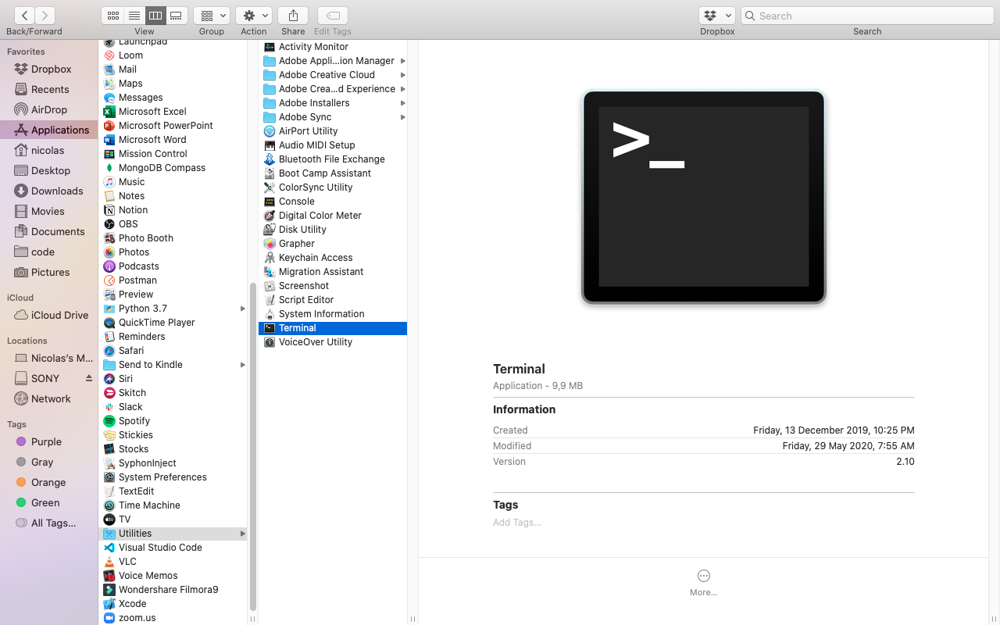

Hola a todos
Mi nombre es Daniel Alejandro
Actualmente trabajo como :
Programador y soporte en
una startup enfocada a las funerarias
Un poco de mi
tengo 8 años trabajo en el rubro de IT.
he trabado como consulter externo.
tuve mi empresa de integradora.
fui profesor de robotica en el nuevo plan para las primarias.
lo mio son poner servidores, configuraciones, e implementaciones, por lo comun todo en opensource
hobbys:
me gusta mucho el cine, los rompecabezas, juegos numericos,
el anime, y juego league of legends para variar
Primero que todo la presentacion
¿De que carrera son?
¿Han tenido experiencia con programacion anteriormente?
¿que gustos, hobbys tienes?
¿que proyectos tienes en mente?
¿porque aprender python?
Presentacion del temario
¿Porque aprender a programar?
¿Porque aprender a programar en python?
Python
Mas rapido de aprenderGran cercania al Ingles
Pensado para tareas cortas,
paradigma divide y venceras
Multiplataformarapido en ejecucion
- Instalar python
- instalacion de un editor de texto para trabajar
- Visual studio code
- Sublime
- Notepad++
todo es reparable.
bajar python
https://www.python.org/
bajar visual studio code
https://code.visualstudio.com/
Habilitar la compilacion
1.- abrir la terminal (aplicaciones/utilidades) Habilitar la compilacion
1.5.- podemos abrir spotligh con command + bbarra y escribir terminal2.- sudo xcode-select --install
2.5.-sudo xcode-select --reset

bajar python
https://www.python.org/
bajar visual studio code
https://code.visualstudio.com/